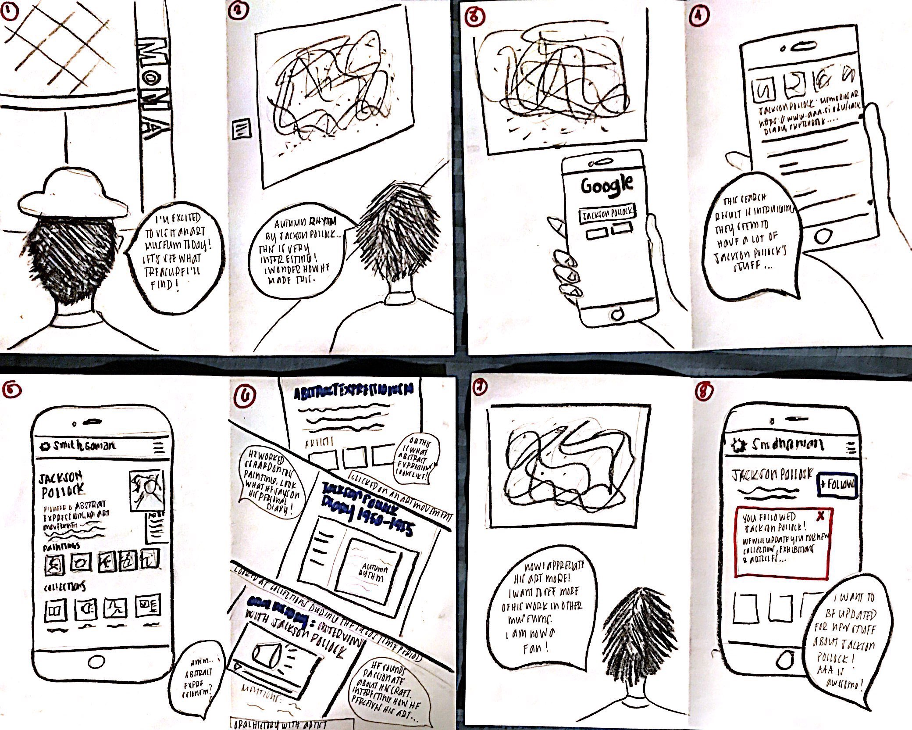

Improving Discovery and Findability of Archives Resources
Overview
Smithsonian Archives of American Art (AAA) is the world's most widely used research center dedicated to collecting, preserving, and providing access to around 20 million artifacts that document the history behind visual arts in America. The goal of the project is to understand the current practices and experiences of the users - art historians, curators, students and other researchers. From the insights, ideate, create and validate design concepts and prototypes to support the users mental models and allow them to discover and find what they are looking for in their research.
Role: UX Researcher, Information Architect
Methods: Contextual Design, Contextual Inquiry / Field Studies,Interview Interpretation, Literature Review, Competitive Analysis, Affinity Mapping, Identity Model, Sequence Model, Model Consolidation, Visioning / Ideation, Product Concepts, Storyboarding, User Flows, User Environment Design, Low Fidelity Prototypes, Concept Testing, Usability, A|B Testing, Card Sorting, High Fidelity Prototypes, Visual Design, Style Guide Team: Solace Sabado, Vijit Bhati, Christine Vaing, Akanksha Srivastava
Duration: 8 months
The Process
We used Contextual design which is a user-centered design process that incorporates ethnographic methods for gathering data via field studies. We used & consolidated work models (sequence model, identity model etc.) and data from individual interviews together so the team can see common pattern and structure without losing individual variation (affinity mapping). After analysis of the data, we did multiple rounds of visioning or ideation to flesh out product concepts that we presented to the client. Once we were told of the direction they wanted, we went ahead with storyboards, user flows, information architecture, user environment design, initial protoypes, usability, card sorting until we reached the final designs that we presented to the clients.
Research Process
Design Process

Affinity Mapping
After every contextual inquiry / field interview, the interviewer interprets it with the team 24 to 48 hours after the interview. During the interpretation sessions, the Notetaker transforms findings, questions, and insights into notes that were all later printed on sticky notes. For these interviews we generated more than 1600 notes. Through bottom-up analysis, starting with the yellow sticky notes we grouped and labeled them into 3 levels (yellow stick notes under blue labels, blue under pink and pink under greens). It took a lot of critique and iterations before we were able to finish our affinity map. In the end, when if you follow the labels, it tells a story about the users in context with the consolidated interview interpretations.
High level findings
From the affinity maps, 13 high level findings emerged. These findings helped us understand the work cycle and experience of AAA resource users.
Consolidated Sequence and Identity Models
For every interview, we created an identity model to identify the user's core motivations and a sequence model to show the user's research process steps and breakdowns. After all interviews we consolidated all models into one.
Consolidated Sequence Model
Consolidated Identity Model
Design Artifacts
During the design phase, we created several artifacts such as Storyboards, User Flows, User Environment Design and Low Fidelity Prototypes. After many iterations, we proceeded with the visual design.
Sample Storyboard 
Paper Prototypes
Style Guide
Sample Final Screens
Challenges and Learnings
There were a lot of instances where our ideas clashed with the existing services of the website. We took extra measures, collected additional data that helped us convey our concepts and designs to our clients at the Smithsonian Instituition in a data-driven way.